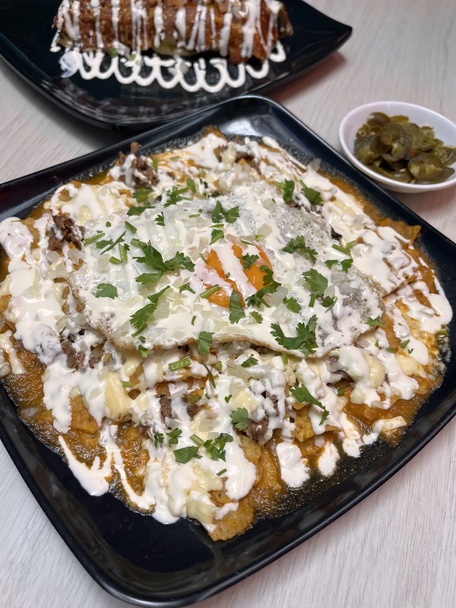
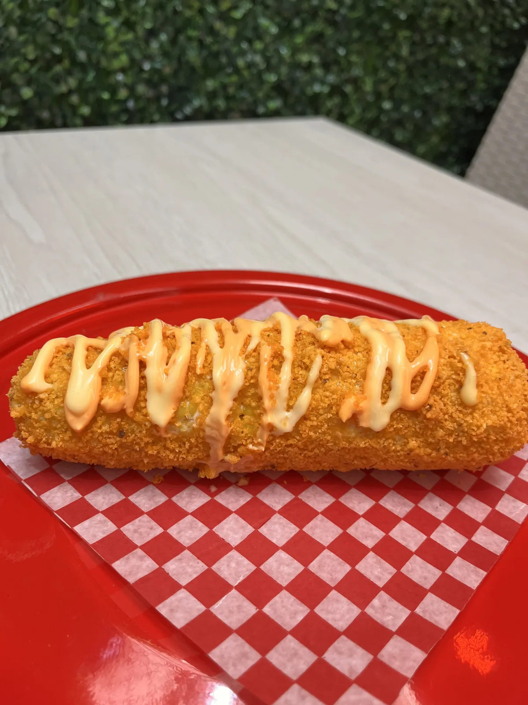
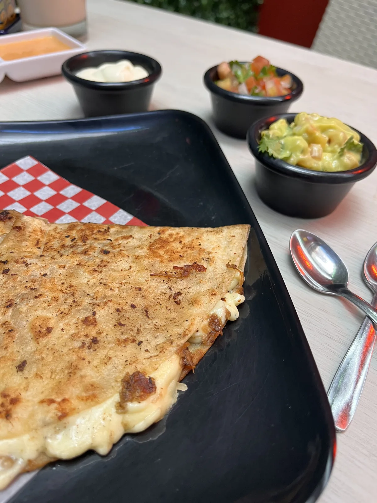
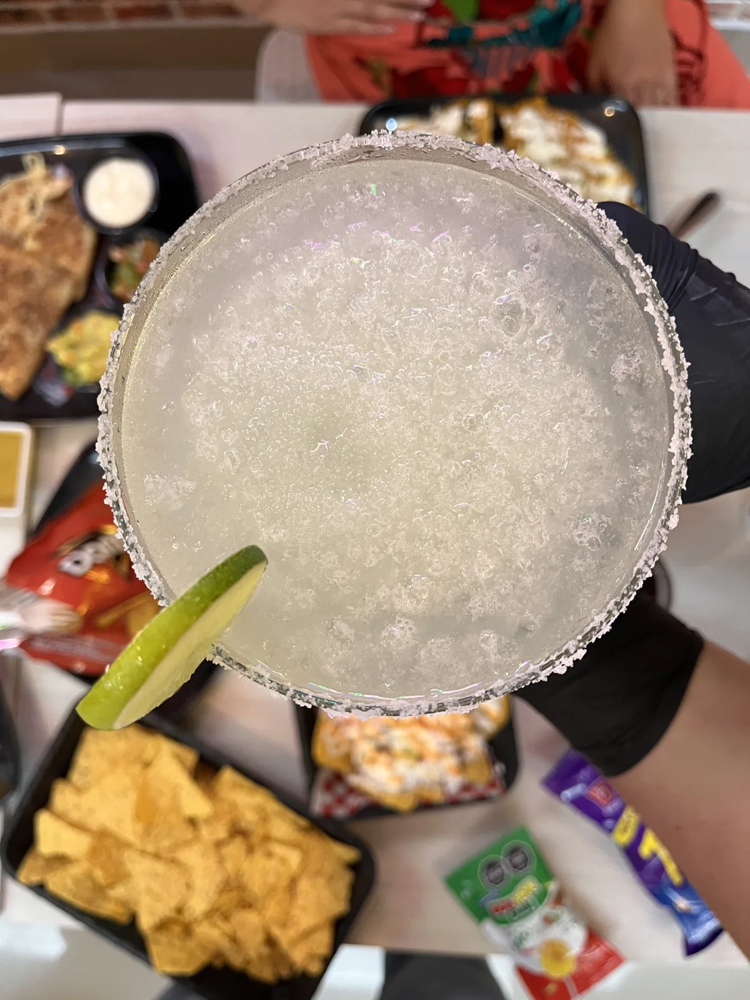

01 — Clásicos
Tacos
Pastor, suadero, birria, carnitas, campechano y tripa. Tortilla de maíz hecha en casa. Cebolla, cilantro y salsa de la casa.
Tacos, burritos, quesadillas y cócteles. Chef mexicano de formación. La única cocina mexicana auténtica del Eje Cafetero.
Manos mexicanas.
Mesa colombiana.
Botanazo no es el México decorativo de los murales de papel. Es el lugar donde un chef mexicano de formación cocina lo que aprendió desde niño: tortillas de maíz, carnes de cocción lenta, salsas molidas en casa. Sin atajos. En Armenia, Quindío.
Pastor, suadero, birria, carnitas, campechano y tripa. Tortilla de maíz hecha en casa. Cebolla, cilantro y salsa de la casa.
Burro especial gratinado con costra de queso. Quesabirria, Maya y mixtas. Guacamole y pico de gallo de la casa.
Margarita tradicional escarchada con sal o tajín. Micheladas, clamato, aguas frescas y chela fría para acompañar.
El único chef mexicano
de formación en Armenia.
Sin atajos. Sin decorado.
Chef formado en México. Recetas originales, no adaptadas. Masa nixtamalizada, carnes de cocción lenta de 8 horas, salsas molidas en casa todos los días.
Norte de Armenia, barrio Providencia. Una mesa para tacos de diario, cenas de semana, cumpleaños y celebraciones. Sin pretensión. Con sazón.
Por WhatsApp o llegando directo. Sin formularios, sin plataformas. ¡Pásele, que hay mesa!
Reservar por WhatsApp →



Cl. 10 Nte. #14-65
B/Providencia
Armenia, Quindío
Martes a domingo
12:00 pm — 9:00 pm
Lunes cerrado